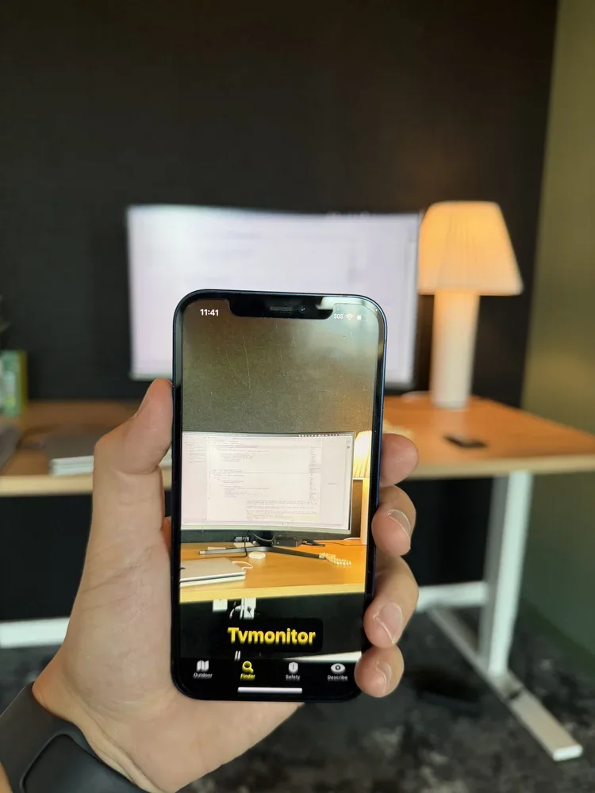
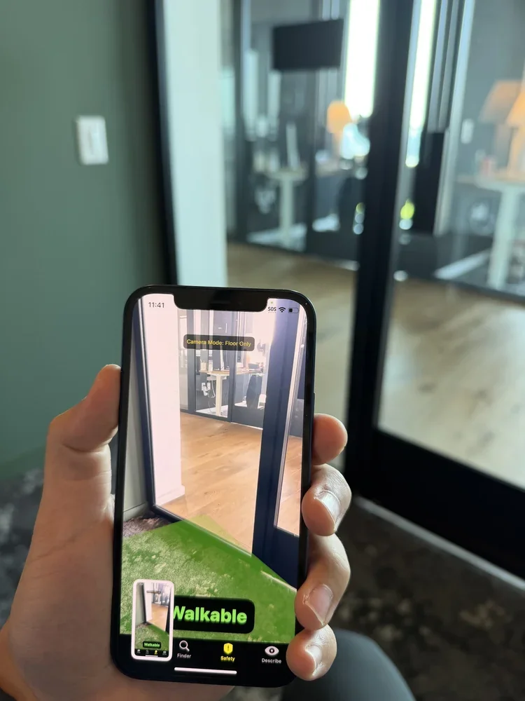
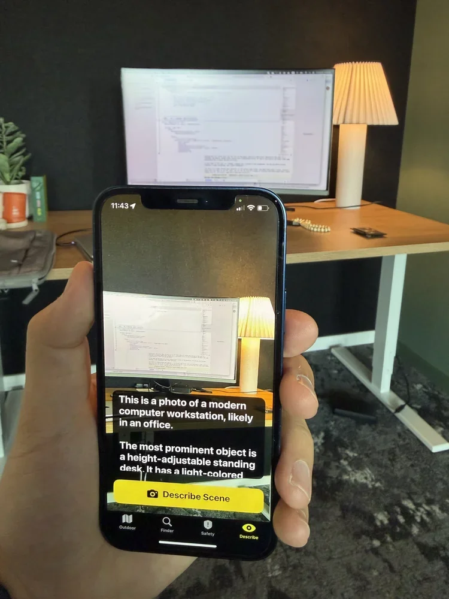
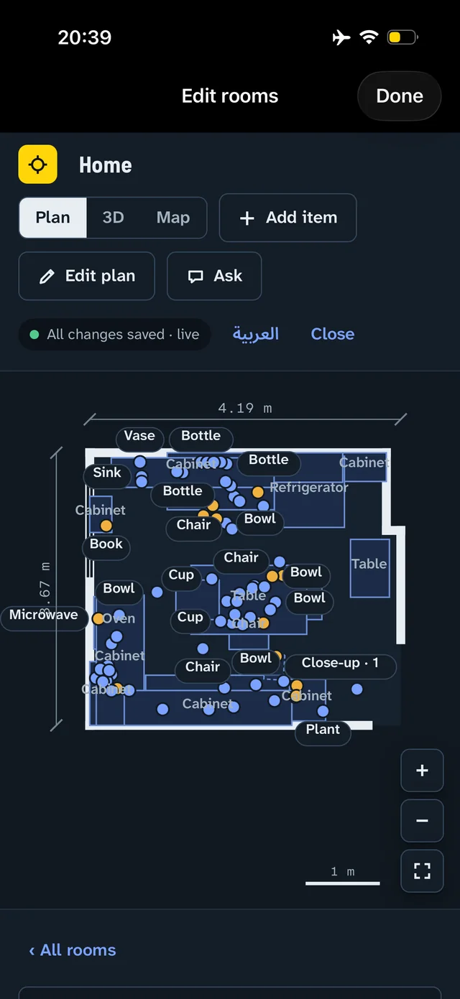
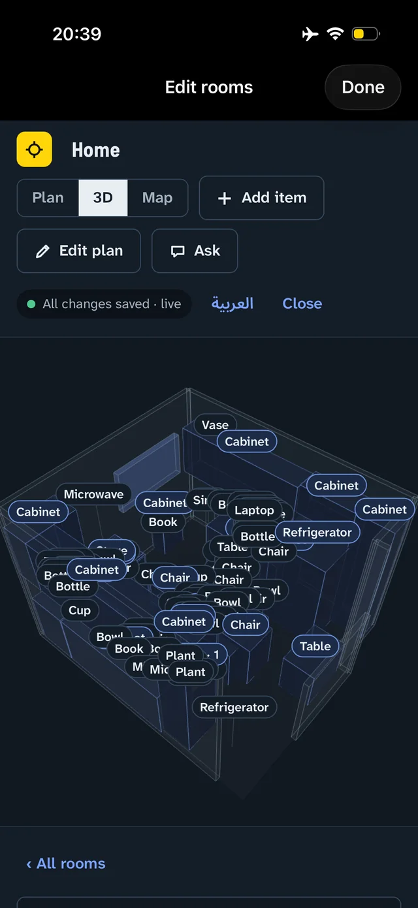
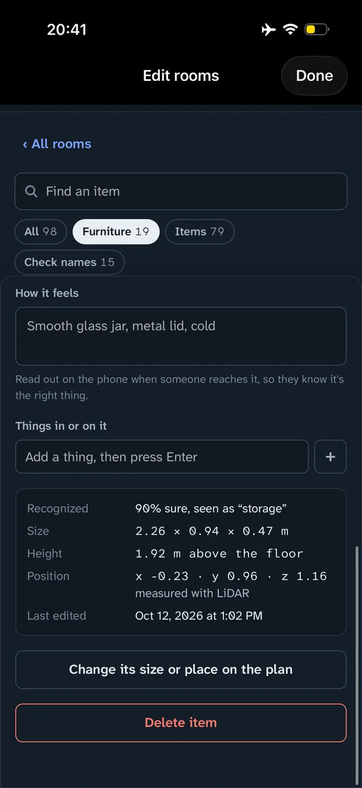
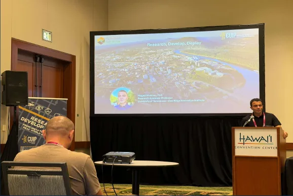

I am the founder and CEO of ApexAI, where we develop real-time spatial navigation software that runs entirely on a consumer handset. Our systems perform perception and localization on-device, which removes the network round trip from the guidance loop and permits operation with no connectivity and no transmission of imagery off the device.
I am also a Research Assistant Professor in Intelligent Transportation Systems at the University of Tennessee-Oak Ridge Innovation Institute, within the Transportation Convergent Research Initiative. My research applies computer vision and machine learning to road safety: modeling driver and pedestrian behavior under conflict conditions, detecting and characterizing hazards in video and multi-sensor data, and constraining model architectures to the latency and compute budgets that field deployment imposes.
This work has been supported by the National Science Foundation, the U.S. Department of Transportation, Meta Reality Labs, and several state departments of transportation and municipalities. I serve as a reviewer for IEEE CVPR, the ASCE Journal of Transportation Engineering Part A, Transportation Research Record, and IEEE ITSC. Outside of work I run and ski.
- Google Scholarscholar.google.com
- ORCID0000-0002-4265-071X
- LinkedInmaged-shoman
- ApexAIapex-ai.site
News
- ApexAI selected for Cohort 1 of the NSF-funded NobleReach Science2Venture accelerator, one of three Tennessee startups.
- Filed U.S. non-provisional (19/760,891) and Canadian (3,319,882) patent applications covering real-time computer-vision navigation assistance.
- Began a pilot deployment of ApexVision with a regional accessibility center under structured outcome measures.
- Two papers accepted at the Transportation Research Board Annual Meeting, on assistive navigation for visually impaired pedestrians and on tracking of unlabeled radar point clouds.
- Named Most Impactful Company at CodeStock.
- Keynote at IEEE/CVF ICCV, Honolulu, and opening keynote at IEEE/CVF WACV, Tucson.
- Completed NSF I-Corps customer discovery, comprising more than 50 structured customer interviews.
Research
My research interests are edge-AI deployment, autonomous vehicle safety, pedestrian behavior modeling, cooperative driving automation, computer vision for transportation, assistive technology, and digital twins for smart cities.
-
Driver and pedestrian attention allocation
Characterizing how drivers and pedestrians allocate visual attention during conflict events, instrumented with AI-equipped glasses for naturalistic gaze capture. Ensemble models quantify the contribution of ambient lighting, intersection complexity, and traffic density to attention allocation, with the objective of producing human-behavior benchmarks against which autonomous vehicle planners can be evaluated.
-
PRISM: real-time mapping for autonomous vehicle operation
Dynamic map generation combining live environmental sensing with learned hazard prediction to support adaptive route planning and cooperative perception under changing road conditions.
-
Cooperative driving automation testbed
A 1/10th-scale connected and automated vehicle fleet running V2X communication stacks, cooperative perception algorithms, and platooning protocols. The platform supports multi-vehicle coordination experiments that are infeasible to instrument at full scale.
-
Real-time traffic safety analysis
Keypoint and dense-pose estimation models for pedestrian crossing-intention prediction, and a parallel dense video captioning framework for end-to-end traffic safety event analysis. The captioning system placed sixth in Track 2 of the NVIDIA AI City Challenge at CVPR 2024, with a score of 29.01.
-
Autonomous vehicle and pedestrian interaction modeling
A transformer-based trajectory prediction model trained on more than 1,500 hours of nuPlan driving data, reducing displacement error to 2.07 m against a 5.89 m baseline. A companion multi-agent inverse reinforcement learning platform simulates vehicle-pedestrian conflict resolution across Boston, Las Vegas, Pittsburgh, and Singapore, predicting evasive maneuvers including swerving and braking at 81 to 84 percent accuracy. Cross-city comparison identified Las Vegas as the most adversarial interaction environment and Singapore the most cooperative.
-
Interactive traffic prediction platform
A graph convolutional gated recurrent unit architecture for network-level traffic forecasting from connected vehicle data, with GPU-accelerated ETL pipelines built on RAPIDS achieving a 50-fold throughput improvement on Missouri's statewide dataset. The platform includes NOCONS, a speech-driven interface through which planners query predicted congestion states by voice.
-
Transportation network companies and urban mobility
Quantifying the effect of ride-hailing services on mode choice in Munich, using a stated-preference survey of 500 respondents and agent-based simulation in MATSim. Larger fleet sizes reduced passenger wait times without a corresponding increase in trip duration, while smaller fleets operated more efficiently under peak demand.
ApexAI
ApexAI develops real-time navigation software that runs on a standard smartphone, requiring no beacons, survey crews, or fixed infrastructure installed in the environment. I founded the company in 2025 and serve as CEO. Two products are in development.
ApexVision
ApexVision addresses outdoor pedestrian navigation for blind and low-vision users. The governing constraint is latency: a scene description delivered two seconds after capture describes a state the user has already left. The system therefore executes its full perception stack on the handset, achieving end-to-end latency from camera frame to audio cue of under 200 milliseconds, with guidance delivered through synthesized speech and haptics. Four transformer models run in sequence, performing semantic segmentation of the walkable surface, monocular depth estimation, object detection and localization, and vision-language scene description. Because inference is entirely local, the system operates without Wi-Fi or cellular service and no imagery is transmitted off the device.
Three operating modes are exposed. Finder localizes a requested object and guides the user to within arm's reach. Safety segments the walkable path and identifies obstacles on it and hazards approaching it. Describe generates a scene description covering layout, people, and signage, and accepts follow-up queries. The application is in free beta on iOS, with Android support planned.



Whereabout
Whereabout addresses indoor navigation. A single iPhone scan produces a measured floor plan and a labeled 3D model, with object extent, height, and position captured by LiDAR. Queries are issued by voice and resolved to a pin on the floor plan with a routed path to the target. The Spaces edition maps venues and events one floor at a time and supports partial rescanning when a layout changes. The Rooms edition maps domestic interiors, cataloguing the contents of drawers and cabinets, with a tactile description read aloud on arrival to confirm the item.



Patent applications covering the navigation architecture are pending in the United States (19/760,891) and Canada (3,319,882).
Publications
Links go to the publisher DOI where one exists, otherwise to the arXiv preprint. The profile on Google Scholar carries citation counts.
Journal articles
- Hatami, P., Shoman, M., and Sartipi, M. Graph-based spatial-velocity clustering and tracking of unlabeled radar point clouds for autonomous vehicles with a novel temporal precision metric. Transportation Research Record, 2026. Accepted.
- Sapkota, R., Flores-Calero, M., Qureshi, R., and others, including Shoman, M. YOLO advances to its genesis: a decadal and comprehensive review of the You Only Look Once (YOLO) series. Artificial Intelligence Review, 2025.
- Sapkota, R., Qureshi, R., Hadi, M. U., and others, including Shoman, M. Multi-modal LLMs in agriculture: a comprehensive review. IEEE Transactions on Automation Science and Engineering, 2025.
- Shoman, M., Ghoul, T., Lanzaro, G., Alsharif, T., Gargoum, S., and Sayed, T. Enforcing traffic safety: a deep learning approach for detecting motorcyclists' helmet violations using YOLOv8 and deep convolutional generative adversarial network-generated images. Algorithms, 17(5):202, 2024.
- Shoman, M., Aboah, A., Daud, A., and Adu-Gyamfi, Y. Graph convolutional gated recurrent unit network for traffic prediction using loop detector data. Advances in Data Science and Adaptive Analysis, 2024.
- Shoman, M., Gargoum, S., and Sayed, T. Transformer-based model for predicting trajectories in autonomous vehicle-pedestrian conflicts: a proactive approach to road safety. Canadian Journal of Civil Engineering, 2024.
- Shoman, M., Lanzaro, G., Gargoum, S., and Sayed, T. AV-pedestrian interaction modeling platform for urban environments: a case study in four major cities. ASCE Journal of Transportation Engineering, Part A: Systems, 2023.
- Shoman, M., Amo-Boateng, M., and Adu-Gyamfi, Y. Multi-purpose, multi-step deep learning framework for network-level traffic flow prediction. Advances in Data Science and Adaptive Analysis, 14(3–4):2250010, 2022.
- Shoman, M., and Moreno, A. T. Exploring preferences for transportation modes in Munich after the recent incorporation of ride-hailing companies. Transportation Research Record, 2675(5), 2021.
- Shoman, M., Aboah, A., and Adu-Gyamfi, Y. Deep learning framework for predicting bus delays on multiple routes using heterogeneous datasets. Journal of Big Data Analytics in Transportation, 2(3):275–290, 2020.
Conference papers
- AlShami, A., Rabinowitz, R., Shoman, M., and others. 2COOOL: 2nd workshop on the challenge of out-of-label hazards in autonomous driving. IEEE/CVF ICCV Workshops, 2025.
- Hatami, P., Shoman, M., and Sartipi, M. Open-world hazard detection and captioning for autonomous driving with a unified multimodal pipeline. IEEE/CVF WACV Workshops, pp. 686–694, 2025.
- Shoman, M., and others. Interpreting the unexpected: a multimodal framework for out-of-label hazard detection and explanation in autonomous driving. IEEE/CVF WACV Workshops, pp. 621–628, 2025.
- Shoman, M., Wang, D., Aboah, A., and Abdel-Aty, M. Enhancing traffic safety with parallel dense video captioning for end-to-end event analysis. IEEE/CVF CVPR Workshops, 2024. Sixth place, NVIDIA AI City Challenge Track 2.
- Tran, D. Q., Aboah, A., Jeon, Y., Shoman, M., Park, M., and Park, S. Low-light image enhancement framework for improved object detection in fisheye lens datasets. IEEE/CVF CVPR Workshops, pp. 7056–7065, 2024.
- Shoman, M., Aboah, A., Morehead, A., Duan, Y., Daud, A., and Adu-Gyamfi, Y. A region-based deep learning approach to automated retail checkout. IEEE/CVF CVPR Workshops, pp. 3209–3214, 2022. Fourth place, NVIDIA AI City Challenge.
- Aboah, A., Shoman, M., Mandal, V., Davami, S., Adu-Gyamfi, Y., and Sharma, A. A vision-based system for traffic anomaly detection using deep learning and decision trees. IEEE/CVF CVPR Workshops, pp. 4207–4212, 2021.
Preprints and work under review
- Qureshi, R., Sapkota, R., Shah, A., and others, including Shoman, M. Thinking beyond tokens: from brain-inspired intelligence to cognitive foundations for artificial general intelligence and its societal impact. arXiv:2507.00951, 2025.
- Dahri, T., Memon, Z. A., Yu, Z., Idris, M. Y. I., Khan, S., Ahmad, S., Shoman, M., Aziz, S., and Qureshi, R. A layered self-supervised knowledge distillation framework for efficient multimodal learning on the edge. arXiv:2506.07055, 2025.
- Raza, S., Qureshi, R., Zahid, A., and others, including Shoman, M. Who is responsible? The data, models, users or regulations? Responsible generative AI for a sustainable future. arXiv:2502.08650, 2025. Under review, ACM Computing Surveys.
- Sapkota, R., Raza, S., Shoman, M., and others. Image, text, and speech data augmentation using multimodal LLMs for deep learning: a survey. arXiv:2501.18648, 2025.
- Mussah, A. R., Shoman, M., Amo-Boateng, M., and Adu-Gyamfi, Y. Accelerating statewide connected vehicle big sensor fusion data ETL pipelines on GPUs. arXiv:2305.07454. Under review, IEEE Transactions on Intelligent Transportation Systems.
- Shohoud, Y., Shoman, M., and Abdelazim, S. Quranic conversations: developing a semantic search tool for the Quran using Arabic NLP techniques. arXiv:2311.05120, 2023.
- Asamoah, J., Kyem, B., Aboah, A., Shoman, M., and Abdel-Aty, M. A comprehensive survey on lane change intention and vehicle trajectory prediction for autonomous driving. Under review, IEEE Transactions on Intelligent Vehicles.
- Hadi, M. U., and others, including Shoman, M. A survey on large language models: applications, challenges, limitations and practical usage. Under review, Artificial Intelligence Review.
Theses
- Shoman, M. Interactive, multi-purpose traffic prediction platform using connected vehicles dataset. Ph.D. dissertation, University of Missouri, 2022.
- Shoman, M., Moreno, A. T., and Moeckel, R. The impact of TNC services on urban mobility. M.Sc. thesis, Technical University of Munich, 2019.
Talks
-
Research, Develop, Deploy

-
Are We Ready to Deploy Agents on the Grid or Plant?
-
Innovations in Challenging the Unexpected in Dashcam Videos
-
VisionAssist: assistive navigation for visually impaired pedestrians
-
Synchronizing sky and street: UAV and CCTV integration for traffic monitoring
-
Enhancing traffic safety with dense video captioning
-
Evaluation of connected vehicle data for congestion and incident detection
-
Development and visualization of winter severity impact using multisource data
-
Visualizing transit system performance impacted by COVID-19: St. Louis, Missouri
Awards and service
- Best Paper Award, IEEE/CVF WACV Workshops, 2025.
- Four top-six finishes in the NVIDIA AI City Challenge, 2021 to 2024.
- Most Impactful Company, CodeStock, 2026, for ApexAI.
- Outstanding Ph.D. Student, University of Missouri College of Engineering, 2021. One of five conferred annually across all engineering departments.
- First place, ITS Heartland research competition, 2021, for work applying connected vehicle data to real-time congestion detection.
- Research on the effect of COVID-19 on St. Louis transit service was featured by NPR St. Louis, 2020.
- Fourth place, World Red Bull Can Car Racing Competition, 2011, with a team from the American University of Sharjah.
I serve as a reviewer for IEEE CVPR, the ASCE Journal of Transportation Engineering Part A, Transportation Research Record, and IEEE ITSC, and have held leadership positions in the Institute of Transportation Engineers and the American Society of Civil Engineers. I served as president of the ASCE student chapter at the American University of Sharjah from 2014 to 2015, and was the first student chapter president to host the ASCE Global President, Dr. Robert Stevens. I have supervised several doctoral and master's students.
Education
- Ph.D., Civil Engineering, University of Missouri, 2022.
- M.Sc., Transportation Engineering, Technical University of Munich, 2019.
- B.Sc., Civil and Environmental Engineering, American University of Sharjah, 2015.
I work primarily in Python with PyTorch, TensorFlow, OpenCV, and RAPIDS for model development and large-scale data processing, and in VISSIM, Synchro, and CARLA for traffic and driving simulation.